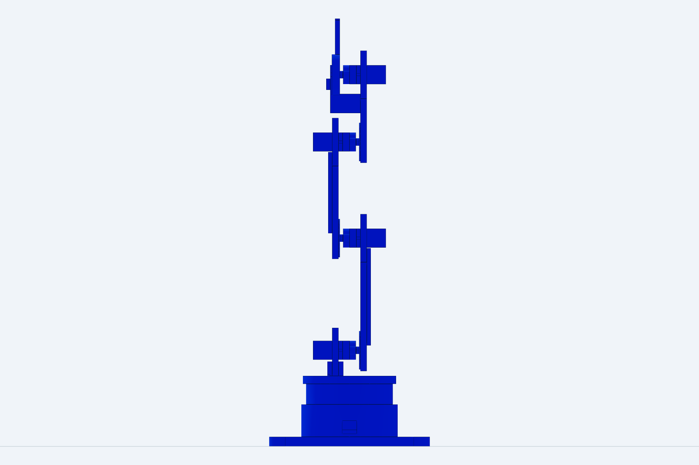
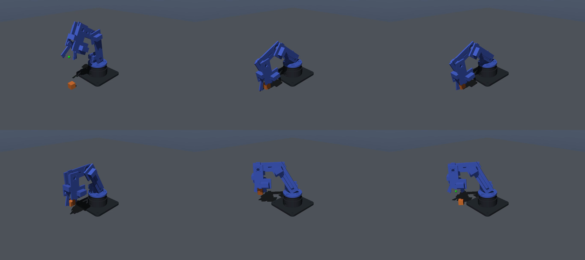
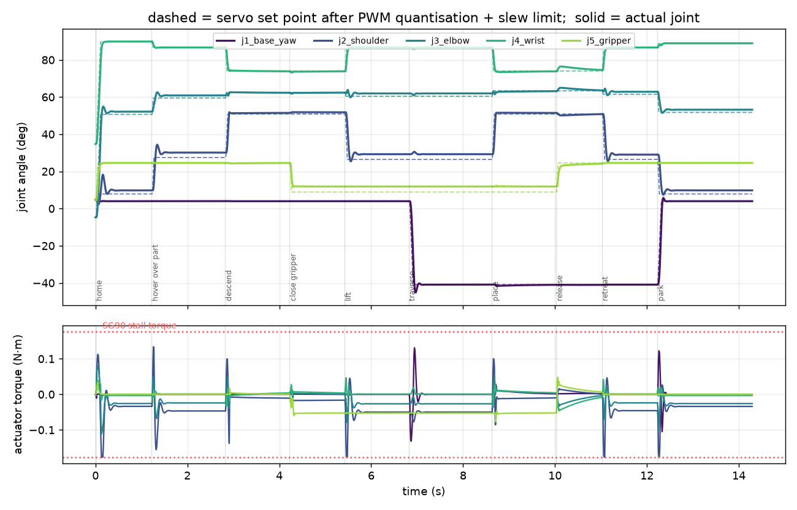
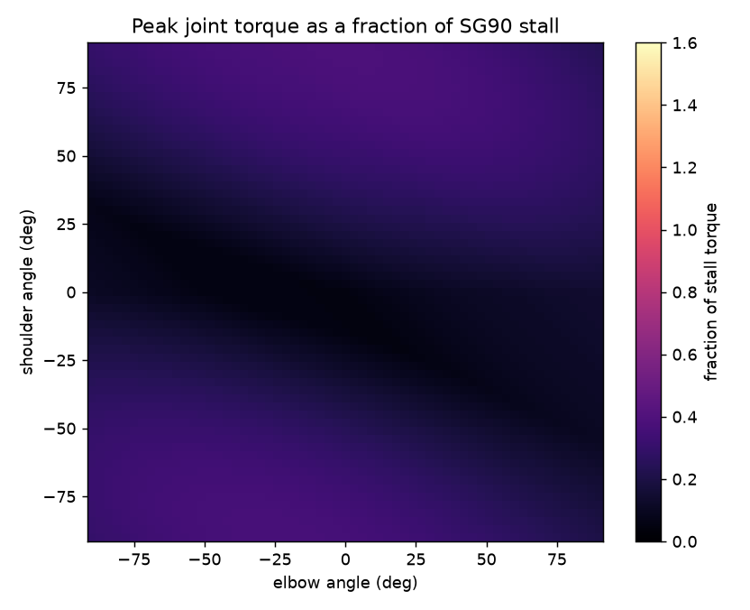
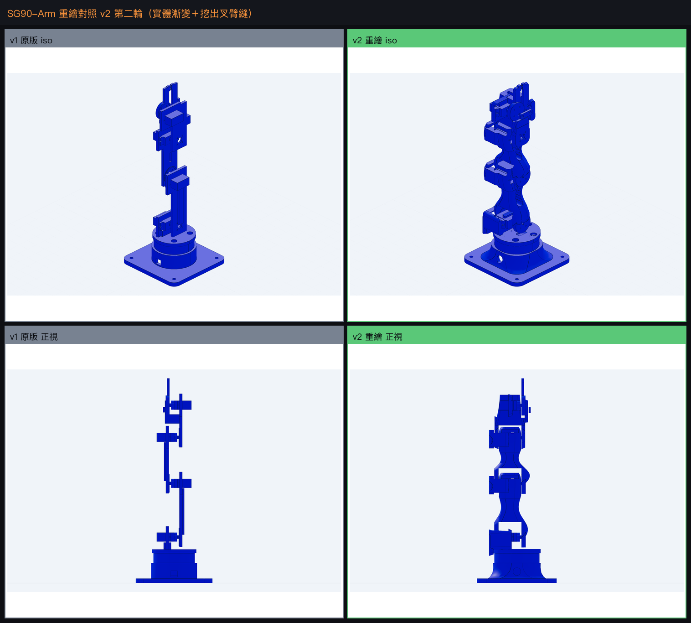
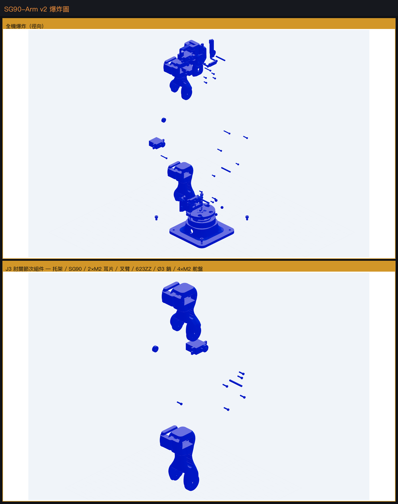
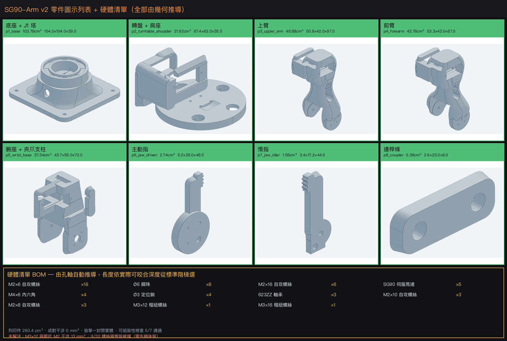
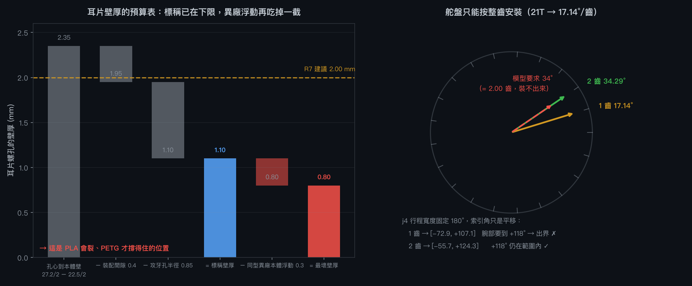

← 回專案總覽與驗證系統
SG90 幾何量測
沒有照 datasheet 抄數字。step.parts
的 sg90_micro_servo.step（sha256 已驗證）下載後，用 OCC 的 BRepAdaptor_Surface
把每個圓柱面的真實軸線抽出來——因為 build123d 的 Face.center() 回傳的是面的
形心，對半圓柱面會給出偏移的位置，直接拿來當孔位會錯。
r= 1.00 axis_pt=( 0.00, -2.35, 11.00) dir=(+0,+0,+1) ← 鎖孔 1
r= 1.00 axis_pt=( 0.00, 24.85, 11.00) dir=(+0,+0,+1) ← 鎖孔 2 → 間距 27.2
r= 2.30 axis_pt=( 0.00, 16.60, 26.70) dir=(+0,+0,+1) ← 輸出花鍵軸
r= 5.90 axis_pt=( 0.00, 16.60, 22.70) dir=(+0,+0,+1) ← 齒輪箱圓凸台| 量測項 | 量測值 | datasheet 標稱 | 備註 |
|---|---|---|---|
| 本體 寬×長×高 | 11.8 × 22.5 × 22.7 | 12.2 × 22.8 × 22.5 | 相符 |
| 含耳片全長 | 32.4 | 32.2 | 相符 |
| 耳片厚度 | 2.5 | 2.5 | 相符 |
| 鎖孔直徑 | 2.0 | 2.0 (M2) | 相符 |
| 鎖孔間距 | 27.2 | 27.8 | 差 0.6mm 本專案的座槽依模型實測值開孔； 若用實體 SG90 要重新量或把孔改成長孔 |
| 輸出軸離本體中心 | +5.35 | — | datasheet 通常不標 |
| 軸面高於耳片頂 | 4.3 | — | 決定連桿與座板的落差 |
定義：安裝座標系（全專案共用）
原點 = 輸出軸軸線 ∩ 本體頂面；+Z = 輸出軸指出方向。在此座標系下伺服佔 Z ∈ [−22.7, 0]， 耳片在 Z ∈ [−6.8, −4.3]，兩個 M2 孔在 Y = −18.95 與 +8.25。所有零件的座槽都由這組常數推導， 不重複輸入尺寸。
手臂設計
骨架
J1 底座偏航 軸 +Z (0, 0.0, 33.0) s=+1
J2 肩 軸 +X (0, 0.0, 60.0) s=+1 ← 上臂 70 mm
J3 肘 軸 +X (0, 0.0, 130.0) s=−1 ← 前臂 60 mm
J4 腕 軸 +X (0, 0.0, 190.0) s=+1
J5 夾爪 軸 +X (0, −11.0, 232.0) s=−1J2–J4 三軸全部落在世界 X 軸上，所以運動學是嚴格平面的，沒有側向偏置要記帳。 底座繞 Z 偏航，手臂在 Y–Z 平面內伸展。
本專案最重要的一條結構規則：關節手性必須交替
對一顆軸線沿世界 X、軸面在 x = xs 的伺服：
s = +1 : 本體朝 −X，舵盤面在 xs + 6.0（連桿材料在 X > 此值）
耳片座在 xs − 6.8（托架材料在 X < 此值）
s = −1 : 本體朝 +X，舵盤面在 xs − 6.0（連桿材料在 X < 此值）
耳片座在 xs + 6.8（托架材料在 X > 此值）一個連桿若要同時鎖上關節 j 的舵盤、又承載關節 j+1 的伺服，
就必須滿足 horn_side(s_j) == seat_side(s_{j+1})，而這只有在符號交替時成立。
搞錯的話，鎖孔會切在空氣中——幾何仍然輸出成一個合法的單一實體，完全沒有錯誤訊息。
我第一版就是在 J5 上犯了這個錯（見失敗 #3）。

真實安裝特徵（不是簡化方塊）
- 伺服座槽：11.8 × 22.5 本體 + 每邊 0.4 mm 餘隙的貫穿窗
- M2 鎖孔：Ø1.7 自攻孔，位置由實測的 27.2 mm 間距推導； 座板凸緣特意加寬到 Y ∈ [−23, +13]，否則有一顆孔會落在材料外
- 舵盤介面：Ø21.4 × 2.0 沉孔 + Ø8 輪轂讓位 + 4 × Ø1.7 螺孔於 Ø14 節圓
- 推力環：底座頂 Ø54/Ø44 環狀承面，高 12.8 mm——這個高度不是選的， 是 SG90 舵盤面必然高於安裝面 12.8 mm 的物理結果
- 其他：束線槽、減重孔、加強脊、夾爪防滑齒紋、走線出口
夾爪
雙指四連桿：主動指直接鎖在 J5 舵盤上，惰指裝在腕部延伸柱的 Ø3 銷上，兩者以連桿條耦合成鏡像動作。 開度 2 mm（閉合）至 46.6 mm（全開），實測映射：
| J5 關節角 (rad) | 0.00 | 0.10 | 0.20 | 0.30 | 0.45 | 0.70 |
|---|---|---|---|---|---|---|
| 夾爪開度 (mm) | 2.0 | 8.3 | 14.7 | 21.2 | 31.0 | 46.6 |
零件清單與驗證
驗證的原則來自這台機器上先前的 text-to-CAD 壓測結論
（~/3d/ttc-test/RESULTS.md）：CAD 工具鏈不檢查任何幾何意圖。
孔切在錯的面上、零件飄浮沒接合，它照樣產出合法 STEP。所以每個零件都要驗
實體數 + 圓柱直徑普查 + 邊界框；沒切到材料的孔在 build123d 裡是完全靜默的。
| 零件 | 體積 | 關鍵特徵稽核 | 狀態 |
|---|---|---|---|
| p1_base 底座 | 76.83 cm³ | 2×Ø1.7 J1鎖孔、4×Ø4.5 腳孔、Ø44 環孔 | ✓ |
| p2_turntable_shoulder 轉盤+肩座 | 15.80 cm³ | 6×Ø1.7（2鎖孔+4舵盤）、Ø21.4 沉孔 | ✓ |
| p3_upper_arm 上臂 | 10.65 cm³ | 6×Ø1.7、Ø21.4、Ø24 舵盤墊 | ✓ |
| p4_forearm 前臂 | 9.44 cm³ | 6×Ø1.7、Ø21.4、Ø24 | ✓ |
| p5_wrist_base 腕座 | 11.07 cm³ | 6×Ø1.7、Ø21.4、Ø3 惰爪銷孔 | ✓ |
| p6_jaw_driven 主動指 | 2.42 cm³ | 4×Ø1.7 舵盤螺孔、Ø21.4 盲沉孔、Ø3.2 曲柄銷 | ✓ |
| p7_jaw_idler 惰指 | 1.34 cm³ | Ø3 樞紐、Ø3.2 曲柄銷 | ✓ |
| p8_coupler 連桿條 | 0.34 cm³ | 2×Ø3.2 | ✓ |
$ python check_parts.py
...
PARTS_VERIFIED
$ python assembly.py
printed parts : 8 total printed volume 127.9 cm3
envelope : X[-50.0,50.0] Y[-50.0,50.0] Z[0.0,267.0]
servos : 5 x SG90
CLASH_CHECK_CLEAN (no pair overlaps by more than 1 mm3)連桿質量慣性（由實體算，非估算）
每個連桿 = 列印件（PLA 1.24 g/cm³）+ 它承載的那顆 SG90（9 g）。伺服約佔連桿質量的 40%
且遠離關節軸，用方塊近似會明顯失真，所以用 OCC 的 BRepGProp 取完整慣性張量。
| 連桿 | 質量 | 質心 (mm) | Ixx | Iyy | Izz |
|---|---|---|---|---|---|
| base_link | 104.27 g | (0.0, −0.2, 12.0) | 8.35e−5 | 8.33e−5 | 1.39e−4 |
| turntable | 28.59 g | (−4.9, −2.3, 17.1) | 7.05e−6 | 7.00e−6 | 8.64e−6 |
| upper_arm | 22.20 g | (9.6, −2.6, 50.7) | 1.71e−5 | 1.60e−5 | 2.06e−6 |
| forearm | 20.70 g | (−9.6, −2.8, 44.5) | 1.25e−5 | 1.15e−5 | 1.98e−6 |
| wrist | 22.72 g | (7.4, −5.7, 32.5) | 1.01e−5 | 6.63e−6 | 5.73e−6 |
| jaw_driven | 3.00 g | (−8.7, 0.9, 6.5) | 5.81e−7 | 4.72e−7 | 1.20e−7 |
| jaw_idler | 1.66 g | (−7.5, −2.3, 12.3) | 2.91e−7 | 2.71e−7 | 2.21e−8 |
| 合計 | 203.1 g | 單位 kg·m²，對各連桿質心 | |||
伺服模型（訊號鏈）
直接餵 target_radians 的模擬，會顯示真實手臂做不到的動作。真實訊號鏈上每一段都會扭曲指令：
最後那道箝制是整個模型的價值所在：伺服撐不住的東西，會表現成追蹤誤差而不是動作。 這正是你希望在列印零件之前就看到的失效模式。
刻意不放進伺服模型的：內部 PD 迴路與扭矩極限。那兩者會和負載交互作用，
屬於物理引擎的職責（MuJoCo 的 kp/forcerange、PyBullet 的 force）。
一個容易被忽略的細節
Servo::read() 回傳的是最後一次寫入的指令，不是軸的實際位置。
它不是位置感測器。模型裡刻意保留了這個語意。
模擬結果
任務：取放一個 15 mm／4 g 的方塊，從 (0, −100, 7.5) mm 搬到 (−70, −70) mm 附近。
程式為 10 個位姿的序列，位姿角度由數值 IK 求得後量化成整數 Servo.write() 參數。


MuJoCo
| 關節 | 峰值誤差 | RMS 誤差 | 峰值力矩 | 佔堵轉 | 飽和時間 |
|---|---|---|---|---|---|
| j1_base_yaw | 16.11° | 1.40° | 0.1318 N·m | 74.6% | 0.0% |
| j2_shoulder | 18.59° | 2.81° | 0.1765 N·m | 100% | 0.8% |
| j3_elbow | 14.35° | 1.64° | 0.1110 N·m | 62.9% | 0.0% |
| j4_wrist | 12.96° | 1.21° | 0.0469 N·m | 26.5% | 0.0% |
| j5_gripper | 10.27° | 2.02° | 0.0773 N·m | 43.8% | 0.0% |
酬載：最大舉高 +50.0 mm，水平搬運 73.9 mm → GRASP_SUCCEEDED
後續更正（見 #54）：
這個舉高是零關節摩擦下的上界，不是值。MJCF 的
frictionloss 未設＝0，而塑膠齒輪舵機有實際的靜摩擦。
把它掃過 0–25% 堵轉扭矩後舉高是 43.5–49.6 mm；
任務成敗與搬運距離不受影響。
PyBullet 交叉驗證
同一支程式、同一個伺服模型、不同物理引擎。只跑一個引擎只能告訴你那個引擎怎麼想。
| 關節 | 峰值誤差 | RMS 誤差 | 峰值力矩 |
|---|---|---|---|
| j1_base_yaw | 7.70° | 0.75° | 0.1765 N·m |
| j2_shoulder | 22.45° | 2.29° | 0.1765 N·m |
| j3_elbow | 2.35° | 0.18° | 0.1765 N·m |
| j4_wrist | 1.40° | 0.15° | 0.1684 N·m |
| j5_gripper | 4.77° | 2.98° | 0.1765 N·m |
酬載：最大舉高 +55.3 mm，水平搬運 75.7 mm → GRASP_SUCCEEDED
兩引擎的差異怎麼讀
任務結果一致（舉高 50.0 vs 55.3 mm、搬運 73.9 vs 75.7 mm），這是重點。
但 PyBullet 的關節追蹤誤差普遍較小、峰值力矩卻幾乎都貼在堵轉值——因為
POSITION_CONTROL 的 maxVelocity 是硬性速度箝制，內部會用滿可用力矩去達成，
與 MuJoCo 的顯式 kp/kv 比例控制不同。兩者都不是「錯」，是不同的伺服近似；
要比較絕對力矩數字時必須知道這件事。
扭矩包絡分析
掃描肩／肘關節全行程 61×61 個姿態，讀 MuJoCo 在零速度下的 qfrc_bias——
那就是各關節必須提供的重力保持力矩。

#34 原本發布的「最壞 38%」不是可達範圍的最壞值 靜默 已更正
做第二支手臂的扭矩預算時，用 link_properties.json 的實測質量
手算完全伸直姿態的肩關節力矩，得到 44.8%，與本頁原本寫的 38% 差 6.8 個百分點。
追下去發現不是「兩個定義都對」：
torque_map.py 掃 j2×j3 時，把腕部釘在
qpos[j4] = clip(π − a2 − a3) # 讓夾爪保持朝下
那是合理的操作慣例，但受限集合的最大值不是可達集合的最大值。
用同一個模型、同一個 qfrc_bias，只改腕部慣例：
| 腕部慣例 | 力矩 | 佔堵轉 | 最壞姿態 |
|---|---|---|---|
| 朝下（原本的圖） | 0.0678 N·m | 38.4% | j2 +90° j3 0° j4 +90° |
| 打直 j4=0 | 0.0788 N·m | 44.7% | j2 −90° j3 −4° |
| 腕部也一起掃 | 0.0789 N·m | 44.7% | j2 +90° j3 0° j4 −6° |
手臂做得到那個姿態（j2、j3、j4 都在行程內），使用者程式隨時可以下。 所以原本的 38% 低估需求 6.3 個百分點、相對 17%。
連帶更正一句錯誤描述：原本寫最壞姿態是「肩 +90°、肘 0°，即完全水平伸展」—— 但那個姿態的腕部被釘在 +90°、是折起來的，並不是完全水平伸展。 這句錯誤描述正是掩蓋低估的地方：它讓人以為已經涵蓋了最極端的姿態。
為什麼守門有效：預算腳本一開始就因為這 6.8 點差距而拒絕繼續
（BUDGET_BLOCKED_PENDING_ANCHOR）。我第一版把容許值寫成 8 點、剛好讓 6.8 通過，
發現後改成 3 點——挑一個恰好能過的門檻，就是把錯誤藏起來。
重現：sim/torque_worst_case.py。
後續更正（見 #48）：下面這個「50% 堵轉」的標準， 在拿到 FT5425BL 同時標示堵轉與額定的資料之後才看得出來——它本身就在連續工況之外 （44.7% 堵轉 ≈ 134% 連續額定）。第一支手臂撐得住是因為動件只有 70 g、酬載 4 g， 不是因為這個標準保守。第三、四支手臂改以連續額定為基準。
用 50% 堵轉當設計上限而不是 100%，是因為便宜的伺服長時間貼在堵轉會過熱、嗡叫並漂移—— 100% 不是可用的工作點。以這個標準看，這支手臂的機構尺寸對 SG90 是合適的，不是勉強。
對應的 Arduino 韌體
sketch.ino 由 make_ino.py 從同一個位姿表產生，
所以 Uno 寫給 5 顆 SG90 的數字，和模擬餵進伺服模型的數字逐位元相同。
const uint8_t POSE[10][N_JOINTS] PROGMEM = {
{ 92, 96, 36, 149, 113}, // home
{ 92, 116, 27, 146, 113}, // hover over part
{ 92, 140, 24, 133, 113}, // descend
{ 92, 140, 24, 133, 97}, // close gripper
{ 92, 115, 26, 146, 97}, // lift
{ 46, 115, 26, 146, 97}, // traverse
{ 46, 140, 23, 133, 97}, // place
{ 46, 140, 23, 133, 113}, // release
{ 46, 115, 25, 146, 113}, // retreat
{ 92, 96, 35, 148, 113}, // park
};接線注意（已寫進 .ino 的註解）
5 顆 SG90 必須用獨立的 5 V 電源（≥2 A）並與 Arduino 共地。 五顆同時堵轉的電流遠超過板載穩壓器，典型症狀是動作做到一半板子 brown-out 重開。
v2 機構重繪
v1 精神上是一支 MeArm：平板、直角、每個關節只靠舵盤支撐。它驗證得過，
但外觀與行為都像切割板材。v2 保持運動學完全不變（關節位置、連桿長度都一樣），
只重做機構，對照 cad/design_rubric.py 的 12 條規則。

參考來源
| EEZYbotARM Mk2 | ABB IRB460 運動學 1:7 縮放、主臂內部走線、垂直軸用滾珠支撐、 夾爪快拆接頭。「一支看起來被設計過的列印手臂」的基準 |
|---|---|
| MeArm | 3mm 平板雷切、廉價伺服、全 M3。v1 基本上就是板材版的 MeArm |
| LittleArm V3 | 4 個零件、0.3mm 層高可印。零件數紀律的參考 |
| 列印機器人通則 | 中空連桿 8–10mm 內部走線；每關節雙軸承（只靠舵盤會撓曲磨損）； 螺孔周圍壁厚 ≥2mm；伺服座要有出線槽 |
改了什麼
| 雙剪關節 | 每個俯仰關節一側是舵盤、對側是 623ZZ 軸承跑在 Ø3 銷上。 這是最大的功能升級——只靠舵盤的關節會撓曲並磨損 |
|---|---|
| 手性交替規則消失 | v1 需要 horn_side(s_j) == seat_side(s_{j+1})，
只有符號交替時成立。那是單剪的產物：連桿只有一側有材料。
叉臂跨過伺服後兩側都有板，下一顆伺服的座可以放任一側。
統一手性後手臂從 59mm 寬降到 47mm，每節形狀也一致 |
| 錐形 loft 連桿 | 斷面是從根部往端部收縮的圓角矩形，受力路徑上不再有等寬平板。 實測根/腰比 1.72 |
| 其他 | Ø8 內部走線通道、不切斷受力路徑的減重開口、每顆伺服的出線槽、 轉盤下 8 顆 Ø6 滾珠溝槽（取代塑膠對塑膠滑動）、燕尾快拆夾爪介面 |
關鍵的建構方式改變
叉臂的縫要「挖」出來，不是「拼」出來
v2 第一版我用 union 疊很多板與腹板，結果比 v1 更亂——它讀起來像一堆盒子鎖在一起。 無論加多少圓角，一堆方塊的聯集看起來就是方塊。
改成：每節連桿是一整塊斷面漸變的 loft，然後把伺服的掃掠體積減掉， 叉臂的縫因此是挖出來的。外表面保持連續，這才是「被設計過的零件」與「一堆邊角料」的差別。
規則評分（可量化的 7 條）
| 規則 | 量測 | 結果 |
|---|---|---|
| R1/R2 雙剪 + Ø10.1 軸承座 | 3/3 個俯仰連桿 | 通過 |
| R3 錐形斷面（根/腰 ≥1.3） | 42.2/24.5 = 1.72 | 通過 |
| R4 圓角化（凸面種類數） | v1 的 10 → v2 的 15 | 通過 |
| R5 內部走線通道 Ø8 | 2/2 個長連桿 | 通過 |
| R8 連桿實體率 <60% | 23.5% | 通過 |
| R9 底座滾珠溝槽 | 8 個 Ø6.5 珠座 | 通過 |
| R12 寬度/連桿長 ≤0.7 | 50.8/70 = 0.73 | 規則作廢 |
R12 不是沒做到，是規則本身跟 R1 互斥
0.7 這條線是我從 MeArm / LittleArm 這類單剪參考設計抄來的。 雙剪跨過一顆 SG90 的寬度有硬下限：舵盤凸台 +11.6 到銷座 −36.4 共 48 mm， 對 70 mm 連桿就已經是 0.69，再加任何壁厚必然破線。
保留 R1（結構）、放寬 R12（外觀）——關節撓曲是會壞的，寬一點只是不好看。
這種衝突記在 design_rubric.py 的 RULE_CONFLICTS 裡，而不是默默調數字讓它通過。
重繪過程中抓到的 6 個問題
| 問題 | 怎麼發現的 |
|---|---|
| 出線槽開在鎖孔上 | 孔數普查：每個零件都少一顆 Ø1.7。槽位 Y∈[−24.3,−15.3] 正好蓋住 Y=−18.95 的鎖孔 |
| 夾爪整組留在 −X | 干涉 738mm³。v1 的 J5 是 s=−1，v2 統一成 s=+1 後舵盤移到 +X，夾爪忘了跟著翻 |
| 托架腹板穿過叉臂走廊 | 干涉 924mm³。銷座在叉臂外、伺服座在叉臂內，直連必然穿過 |
| 伺服耳片沒有讓位 | 干涉 69mm³。窗口只清本體 22.5mm，耳片有 32.4mm |
| 讓位切口把零件切成兩塊 | 實體數 = 2。干涉檢查是乾淨的，只有實體數看得出來 |
| 舵盤沉孔後方沒有材料 | 孔數普查：4 顆舵盤螺孔只剩 2 顆。連桿收窄後 Ø21.4 沉孔吃掉剩餘厚度 |
#28 「數圓柱面」的普查法在 v2 失效 已修
v1 沒有圓角，所以每個圓柱面都是孔，數面等於數孔。v2 到處都是 RectangleRounded，
一個半徑 1.5 的圓角和一個 Ø3 銷孔在「半徑」上完全一樣。
而且 v2 的多壁結構讓一個孔穿過兩道壁會產生兩個圓柱面， 讓正確的零件看起來多了一顆螺孔。
修法：feature_census.py 改為（一）只數凹面（孔是凹的、圓角是凸的），
（二）依軸線去重而不是數面。順帶發現 mirror() 會翻轉面方位讓凹凸判斷反過來，
所以惰爪改成直接用負 Y 建構，不用鏡射。
還沒做：v2 尚未接進模擬與驗證系統
目前 v2 只到 CAD。URDF、MuJoCo 模型、沙盒幾何、以及那 205 項驗證套件
全部仍跑在 v1 上。要接上去需要：重算 link_properties.json、
重匯連桿網格、重生 MJCF、重訂黃金基準，並且更新沙盒與對照頁的示範角度
——因為 j3 的 SERVO_SIGN 從 −1 變成 +1，所有 write() 數值都會變。
這不是小工程，而且會讓已驗證的數字全部重來，所以我沒有擅自動它。
全螺絲組裝與工程圖
把所有緊固件都畫出來、組裝、再出三視圖與爆炸圖，原本的目的是讓 VLM 判讀。 結論是看圖不夠——真正的組裝缺陷全部是「數字」而不是「輪廓」， 所以這批圖之後才有了 T8 可組裝性那一層（見驗證章節）。 圖仍然保留，因為它們是人工複核最快的入口。



| 項目 | 數量 | 來源 |
|---|---|---|
| M2 自攻螺絲 | 30 | 5 伺服 ×（2 耳片 + 4 舵盤）；長度混合 ×6 / ×8 / ×10 |
| M3 樞紐螺絲 | 2 | 夾爪曲柄，×6 與 ×8 各一 |
| M4 內六角 | 4 | 底座鎖工作檯 |
| Ø3 定位銷 | 4 | 3 個俯仰關節的軸承銷 + 夾爪惰動側 |
| 623ZZ 軸承 | 3 | 每個俯仰關節一顆（R1 的量化條件） |
| Ø6 鋼珠 | 8 | 底座偏航推力環（R9） |
| SG90 伺服馬達 | 5 | step.parts 下載並經 sha256 驗證的真實 STEP |
重生方式：cad/make_drawings.py、cad/joint_explode.py、
cad/make_partsheet.py。三者都直接讀當下的 CAD，所以幾何一改圖就跟著改。
動手製作前的調查：兩個 build blocker 與一份先做清單
要真的把它做出來，先查那些我在 CAD 裡填了具體數字、而填錯就做不出來的地方。 查完發現兩個真正的 blocker，其中一個是設計本身的錯，不是製造難度。

Blocker 1：j4 的舵盤索引角在花鍵上裝不出來 靜默 已修正
SG90 的輸出花鍵是 21 齒 → 17.14°/齒，舵盤只能離散地按整齒安裝。
而模型裡 HORN_INDEX_DEG["j4_wrist"] = 30.0，= 1.75 齒，物理上裝不出來。
影響是實質的，不是四捨五入的問題。j4 行程寬度固定 180°，索引角只是平移它， 而腕部這支手臂需要到 +118°：
| 安裝 | j4 行程 | 能否到 +118° |
|---|---|---|
| 1 齒（17.14°） | [−72.9°, +107.1°] | ✗ 出界 10.9° |
| 2 齒（34.29°） | [−55.7°, +124.3°] | ✓ 還有 6.3° 餘裕 |
| 原模型值（30°） | [−60.0°, +120.0°] | 數字可行但裝不出來 |
已修正：索引角不再是可以手寫的實數，改成由齒數推導——
HORN_TEETH = {"j4_wrist": 2}，HORN_INDEX_DEG 由它乘上 360/21 算出。
這樣它再也不可能落在齒與齒之間，而不是靠一條檢查事後抓。
原始碼註解裡那句「~34 deg, rounded to 30 for the model」就是錯誤來源：
那次四捨五入沒留下任何痕跡，因為 30° 仍涵蓋 IK 要的 +118°，
於是模擬與韌體一致地跑在一個沒人裝得出來的組態上。
連帶重新基準化 T7，並因此發現黃金基準本身也有問題（見 #40）。
為什麼原本的測試沒抓到：測試檢查的是「行程寬度＝180°」與「索引角與極限一致」， 兩者在 30° 下都成立。當時沒有任何一項知道花鍵是離散的。
已經補上了：T2 新增「舵盤索引角必須是整齒」，常數 SPLINE_TEETH = 21
放在 HORN_INDEX_DEG 旁邊。這條檢查曾刻意留成失敗，
讓套件回報 204/205 而不是全過——把已知缺陷寫成散文而不寫成測試，
正是這個專案要避免的事。現在索引角改成 2 齒、T7 重新基準化，它通過了。
Blocker 2：耳片壁厚已在下限，而 SG90 是被大量翻製的零件
T10 那節算出耳片螺孔的壁厚上限是 1.10 mm，是 SG90 的幾何決定的。 問題是 SG90 沒有單一製造商：它由中國數百家小廠翻製， 「尺寸、速度、扭矩、軸的大小會依來源甚至批次大幅變動」， 資料表寫 22.5 mm 的寬度實測有約 0.3 mm 的浮動， 而且一批的舵盤常常裝不上另一批的軸。
對這個設計的意義很直接：0.3 mm 的本體浮動會把 1.10 mm 的壁吃到 0.80 mm， 而 0.4 mm 的裝配間隙也幾乎被吃光。最脆弱的位置正好是 T10 已經標記為「無法再改善」的那一處。
可行的做法：
- 五顆伺服買同一批，到手先量：本體長寬、耳片孔距、舵盤花鍵
- 量到的值填回
cad/sg90_params.py—— 它是單一來源， 改一個常數整組零件與整套驗證都會跟著重算（包含那條推導出來的壁厚下限） - 材料用 PETG 不要用 PLA。理由不是偏好：自攻螺絲在脆性材料上會直接裂， PETG 韌性夠；而 0.80–1.10 mm 的壁正是最會裂的地方
尺寸選擇的驗算
| 我填的值 | 查證結果 | 依據 |
|---|---|---|
| M2 攻牙孔 Ø1.7 | 正確 | 自攻螺絲的引孔應為外徑的 85–90%；M2 → 1.7–1.8 mm。1.7 是 85%，偏緊端， 對 PETG 合理 |
| 軸承座 Ø10.1（裝 Ø10 的 623ZZ） | 需實印驗證 | 壓配的建議是負間隙（PLA 每側 0.05、PETG 可到 0.10）。 Ø10.1 是正間隙 +0.1 —— 但 FDM 的孔實際會比模型小 0.1–0.3 mm， 所以印出來大概落在 9.8–10.0，剛好變成壓配。 這是碰巧不是設計，而且高度依賴印表機。必須印試片實測 |
| 裝配間隙 0.4 mm/側 | 偏緊 | 校準良好的 FDM 在 XY 約 ±0.2 mm，加上伺服本體 0.3 mm 浮動就吃光了。 建議先印一個伺服座試片試裝 |
電源：不能從 Arduino 供電
五顆 SG90，每顆堵轉電流約 0.5–0.7 A，同時動作時合計 2.5–3.5 A。 Arduino 的穩壓器承受不了，會 brownout 或直接燒。需要：
- 獨立 5–6 V、≥3 A 電源（或 2S 鋰電 + 5V/3A UBEC）
- 共地：電源的 GND 必須另接一條線到 Arduino 的 GND
- 粗一點的線 + 電源端加電容，降低電壓跌落
注意這裡的 0.5–0.7 A 是社群與資料表的引用值。 依前一節的邏輯，這正是本專案會堅持實測的數字 —— 而量它需要的 INA219 也正好是補 validation 缺口要用的那一顆。
組裝順序：伺服要先歸中再上機
這一條所有教學都強調，而且是不可逆的：舵盤裝上去之後角度就固定了。
- 先通電把每顆伺服轉到 90°（中位），保持通電再裝舵盤 —— 否則關節的行程會有一半被機構極限吃掉
- 裝舵盤時若卡不進去、或裝進去孔不在正交方向，把它拔起來轉約 45° 再試
- j4 的舵盤裝在 +2 齒（34.29°），不是中位（見 Blocker 1）
- 依 T8 推導出的裝配順序組裝：先把伺服鎖上托架，再套上一節連桿的叉臂。 T8 就是依這個順序判定起子路徑的，所以順序反了會有 9 根螺絲鎖不到
建議的「先做什麼」清單
| # | 動作 | 為什麼放在這個順序 |
|---|---|---|
| 1 | 買五顆同批 SG90 + 3 顆 623ZZ，到手先量 | 所有下游數字都由 sg90_params.py 推導。量完才知道要不要改 |
| 2 | 印公差試片：伺服座 + 軸承座 + 兩個 Ø1.7 孔 | 幾分鐘的事，但決定 Ø10.1 與 0.4 mm 間隙對不對。 Printables 上有現成的孔公差量規與軸承校正件 |
| 3 | 量到的值填回 sg90_params.py，重跑 tests/run_all.py |
整套檢查會重新推導，包含壁厚下限。這步是整個驗證系統真正兌現價值的地方 |
| 4 | 決定 j4 索引角（建議 34.2857），重新基準化 T7 | Blocker 1，已修正為 2 齒（34.29°） |
| 5 | PETG 印全部 8 件，孔周 100% 填充、多加牆 | 0.80–1.10 mm 的壁需要韌性材料與足夠牆數 |
| 6 | 接獨立 5 V/3 A 電源，共地，先單顆歸中 | 組裝前的最後一步；歸中之後才碰舵盤 |
| 7 | 依 T8 順序組裝 | 先鎖伺服再套叉臂 |
可用的開源資源
| 資源 | 用途 |
|---|---|
| Hole Tolerance Gauge | 孔徑量規，每欄遞增 0.0–0.3 mm。用來定 Ø1.7 與 Ø10.1 要不要補償 |
| Printer Tolerance Test · Diameter Tolerance Test | 直接量出自己印表機在 XY 的實際偏差 |
| Hole Tolerance Calculator · Tolerance & Fit Calculator | 壓配／滑配／間隙的建議值，含軸承與螺絲 |
| RobotGeek 101: Servo Centering | 伺服歸中的標準流程 |
| MeArm IK 校正 | 同樣是 SG90 手臂，記錄了實機角度與模型角度對不上時怎麼校 |
| Arduinobot | 韌體與 ROS 2 介面的參考切法（見ROS 節） |
一句話總結這節
設計本身沒有製造難度上的問題——8 件都放得進標準床、都有貼床面、最差擺法只有 11% 需支撐。 真正的風險是兩個尺寸決策：一個是模型裡填了物理上裝不出來的舵盤角度（可修，但會動到已發表數字）， 另一個是壁厚已在 SG90 的幾何下限、而 SG90 本身是尺寸會浮動的翻製零件（要靠實測與換材料吸收）。 兩者都不是印出來才會發現的問題，但都是不查資料就不會發現的問題。